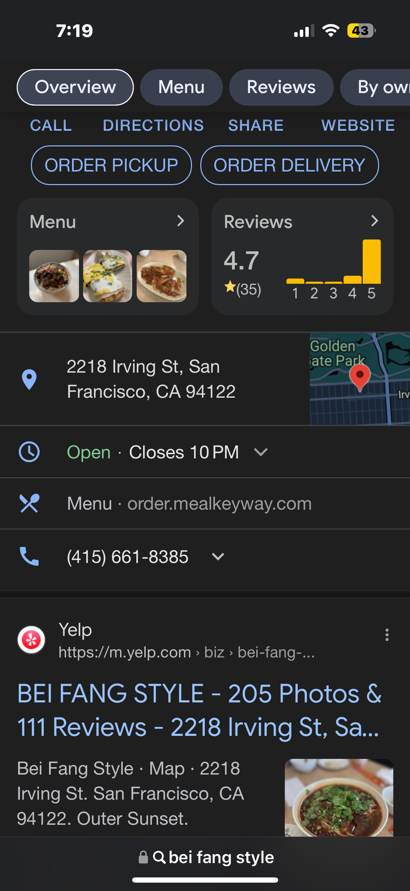

Hello! Welcome to my feed, this is a little sneak peak into my daily phone habits.
I don't watch youtube as much anymore, but I still go on it sometimes and one of the things I like to watch is Hot Ones.
This is video of me scrolling through my current spotify playlist.
Another one of my favorite apps is Letterboxd, I like going in to look for new movies and log any recent movies I've seen.
I'm starting to cook for myself more, and I have been very into chicken salads. This is one I did the other day and like to send a pic to my parents so they know I can actually cook.
This is a clip of me doing the wordle the other day. I LOVE WORDLE.
I like to go on ticketmaster and see if any artists I like are doing a show soon. I really like Belle & Sebastian but the concert is during finals week. I love to scroll on Pinterest, either to look for inspiration or just as a fun way to relax and look at cool things.
I recently discovered sudoko and I love it. It's a lot easier than I thought.
I love depop, not even for buying, I just like looking at clothes, it's a problem that app drains my battery like crazy.
This is my favorite app, I think I use this more than any social media app. I check it about 10 times a day. You never know with SF weather.
I need about 20 million alarms to function.

This is a restaraunt that my friends and I like to go to, it is so good 10/10 reccommend.